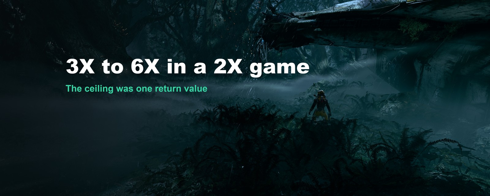
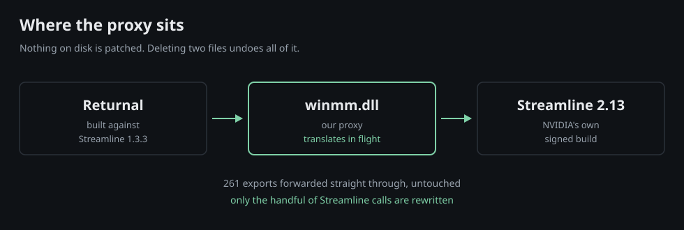
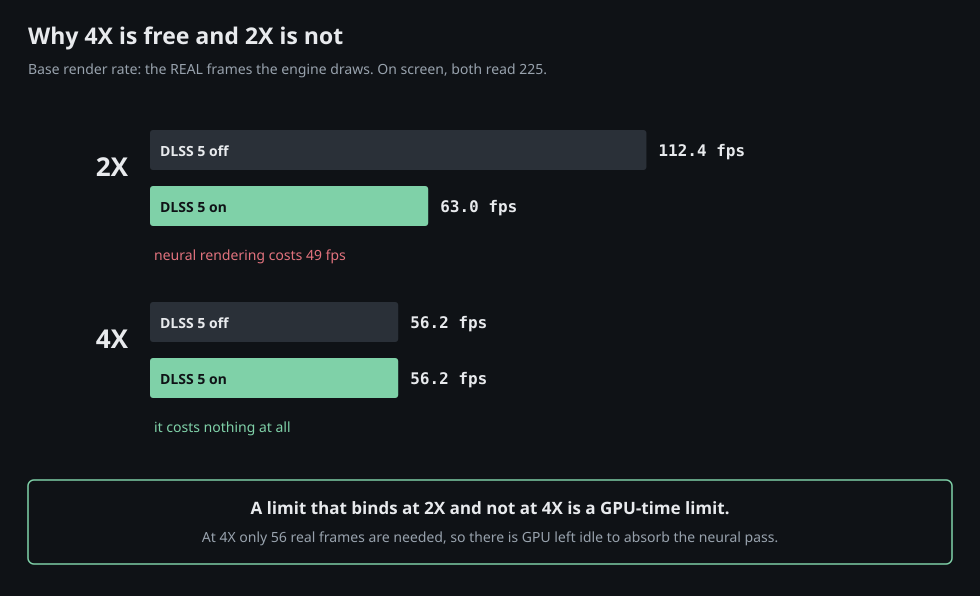
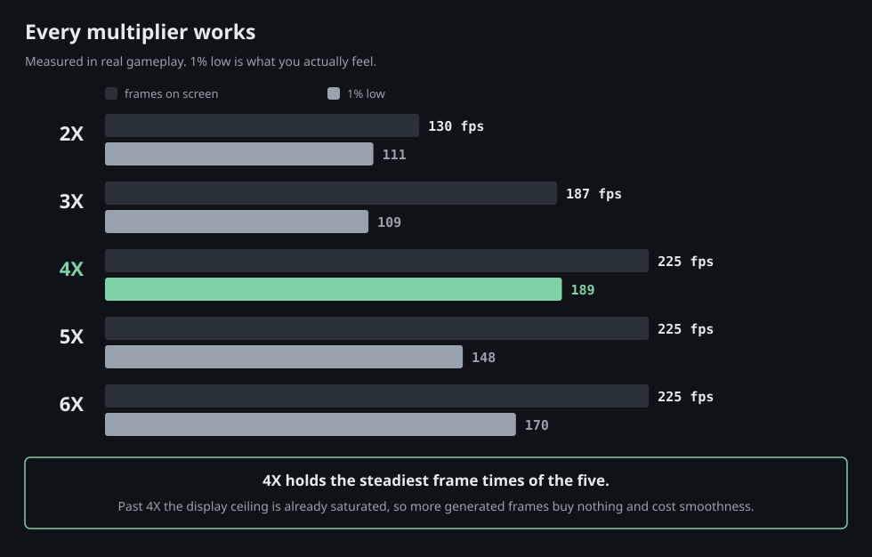
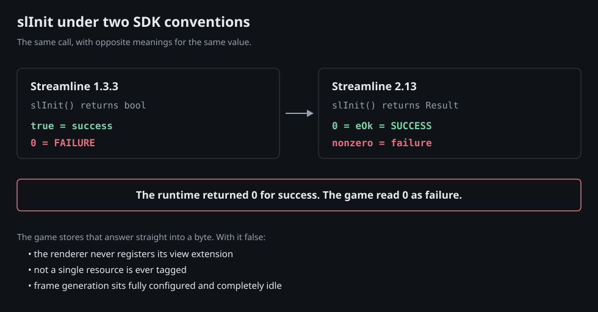
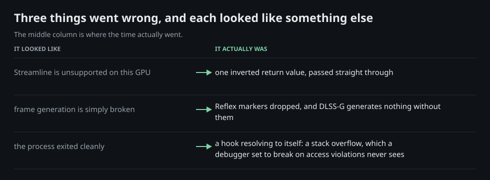

Build write-up
Returnal was built against an NVIDIA SDK old enough that multi-frame generation did not exist yet, and the game hardcodes a request for exactly one generated frame. It turns out the ceiling is not really in the game. It is in one byte.

Returnal ships with NVIDIA Streamline 1.3.3. Multi-frame generation needs 2.11 or newer. I wrote a small proxy that sits beside the game and translates the old SDK calls into the new ones while the game runs, so the game keeps speaking the language it was built for and the modern runtime hears something it understands.
The result is 3X, 4X, 5X or 6X, whichever you set, against a game that shipped 2X as its hard ceiling. The runtime reports its own maximum as five generated frames, which is 6X. Nothing on disk is patched. Deleting two files undoes all of it.

Not what you would expect, and this is the part worth reading.
On screen, the frame counter read 225 at 2X and 225 at 4X. Identical. It looks like the whole exercise achieved nothing, and I very nearly wrote it up that way.
The output was pinned by the display ceiling. Both settings saturate it, so at the ceiling they are indistinguishable. The change was upstream, in how many frames the engine actually had to draw:
with neural rendering OFF
4X base render 56.2 fps x4 = 224.8 -> 225 on screen
2X base render 112.4 fps x2 = 224.8 -> 225 on screenSame picture, half the real rendering work. That is the whole point of multi-frame generation, and it is invisible on the frame counter. What you gain is not a bigger number. It is a GPU with time to spare.
Turn the expensive thing back on and the gain stops being theoretical. With DLSS 5 Neural Rendering running in both cases:
with neural rendering ON
4X base render 56.2 fps -> 225 on screen
2X base render 63.0 fps -> 130 on screenThe engine renders fewer real frames and delivers 73 percent more of them. That is the whole result in one line.
The asymmetry is the proof, not either number on its own. At 2X, switching neural rendering on costs 49 fps of real rendering, from 112 down to 63. At 4X it costs nothing at all: 56 either way. Because at 4X the engine only needs to produce 56 real frames to fill the display, and there is enough of the GPU left idle to absorb the neural rendering inside that slack. At 2X it must produce 112, the slack is gone, and the cost comes straight off the frame rate.
A limit that binds at 2X and not at 4X is a GPU-time limit, which is the thing the proxy changed. A CPU or engine bottleneck would have pinned both.


The old SDK initialisation function returns a boolean, where true means it worked. The new one returns a result code, where zero means it worked. Passing that value straight through turns every success into a failure.
The game stores the answer directly into a byte, and that byte is one of three the engine consults before deciding whether the framework is available at all. With it false, the renderer never registers its extension, never tags a single resource, and frame generation sits there fully configured and completely idle, because nothing is feeding it.
It also explains something that had already cost hours. Forcing the support check to answer yes crashes the game, because the function then says yes while the globals it is built from still say no, and the module disagrees with itself. The fix was not making the game say yes. It was stopping myself from saying no.

Frame generation will not produce a single frame without low-latency mode active. The old SDK submits its latency markers by smuggling the marker into an argument meant for something else entirely, and the values alternate between two numbers forever, which no legitimate use of that argument ever would. The modern runtime rejects the call outright. Those markers have to be translated into the newer mechanism before anything is generated at all.
To intercept the SDK I hook the system call that resolves function addresses. Then my own code used that same call to find the real functions, and was handed my own interceptors back. Every one of them called itself.
It surfaces as a stack overflow rather than an access violation, so a debugger set to stop on access violations sees nothing at all and the process simply disappears. I spent a genuine amount of time convinced the game was quitting on purpose.

Frame generation is interpolation. More generated frames means more of them invented between the same two real ones. Look at fast camera movement, thin geometry against a bright background, and HUD text before deciding that six is better than four.
There is one behaviour that will make you think it is broken when it is not: frame generation switches itself off when the game window is not focused. That is normal. If you alt-tab out to read a number, the number you come back to is wrong. I diagnosed my own working build as unstable because of this, and said so out loud, before realising I had been measuring a backgrounded game.
GPU. GeForce RTX 5090, 32 GB. This is the only GPU this was built and verified on.
Display. 3840x2160 at 240 Hz. The 225 fps ceiling in the numbers above is deliberate: with low-latency mode active and VSync on, the frame rate is capped a little under the refresh rate on purpose, to keep the present queue off the VSync wall. Those twelve invisible frames buy real input latency, and I would not trade them.
Also running. DLSS 5 Neural Rendering, and the game native HDR. No ReShade and no RenoDX are involved in any of the frame generation work.
Download it here, from this site. It is free, MIT licensed, and the complete source comes with it.
You supply the modern SDK yourself, downloaded from NVIDIA. That is partly the correct thing to do with someone else runtime, and partly necessary: the game verifies the signature on those files and silently refuses anything that is not NVIDIA own signed build.
One honest limit. This works on Returnal, and it will not work on your other games. It hardcodes offsets into Returnal own binaries, the specific names its build exports, and the particular way this game routes its latency markers. Another title does all three differently. A tool that is honest about working on one game is more useful than one that quietly breaks on twenty.